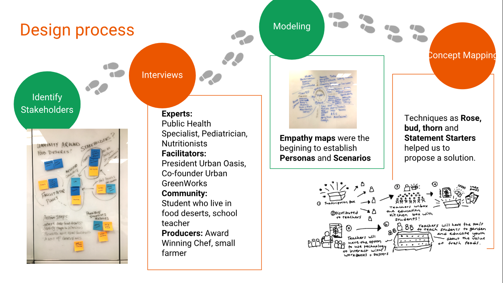
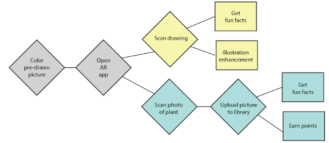
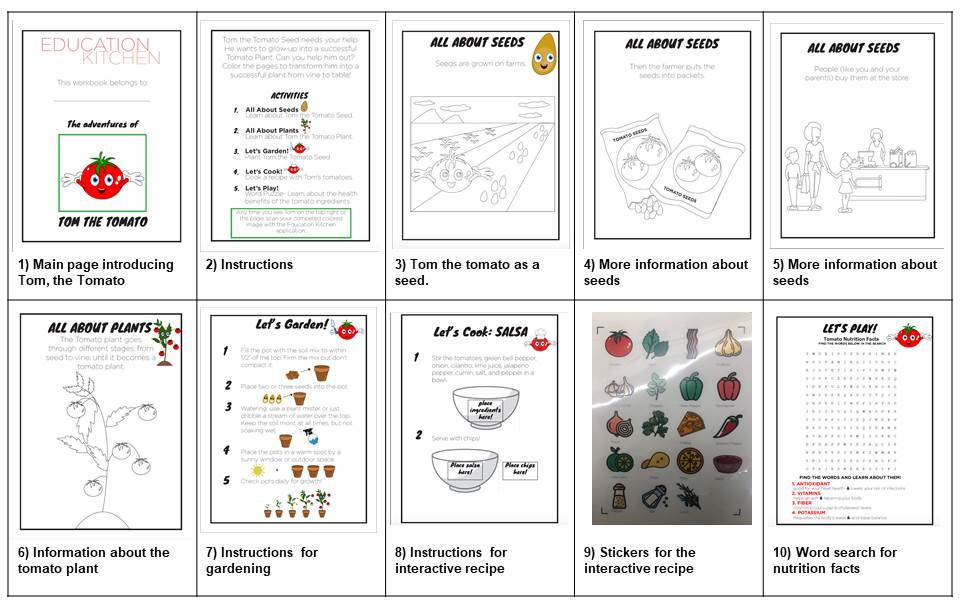

Education Kitchen
Project Description
The current project aims to "Design a system to enhance how people weave together within communities and wider society as a whole” (CHI 2019 SDC). In the following sections, I will describe all the stages we have been through these two first months in the Designing Innovation Class. We were divided in groups to propose and design solutions applying methods of Human Centered Design for looking, understanding and making. All these activities and techniques were based in the Project Planning Kit from the LUMA INSTITUTE.
The main goals for this project include:
- Offer an accessible and affordable solution
- Address some of the challenges such as cultural barriers and technology barriers often not addressed by other interventions (farmer food trucks, apps to teach about health literacy, etc.)
- Offer flexibility to address the local and regional differences across a state or a country (e.g. Florida vs. Wisconsin vs. Oregon)
- Design a solution that creates an energized global community of food literacy advocates and excitement about fresh produce (modified per feedback after initial prototype) as well as the importance of supporting local farmers and food gardens.
Purpose
The main purpose of the project is to bring communities together. We want to design a system that covers the spectrum of health for populations. People have different relationships with food, even for upper middle income households. Food choices and decisions may not be “healthy” regardless of income or proximity to healthy food.
Category
Design Innovation
Platform Used
Illustrator
Date
September 2018
Duration
60 days
My Role
For this project, I joined a team later on in the semester as they had already come up with a general idea of the soluation. I helped with iterating on the project concept and I was also responsible for implementing the solution, as well as creating illustrations for the prototype.

01. Design Proceess
These are the steps taken to identify the stakeholders (journey mapping) and compare and constrast ideas until we came up with our solution called "Education Kitchen".

02. User Flow
"Education Kitchen" includes an optional complimentary app for an Augmented Reality experience. We believe that this is a very powerful feature that levels up our solution bringing an innovative way of engage students, teachers and parents. The diagram below shows a proposed flow for this experience.

03. Finished Prototype
Workbook: Contains various activities, such as coloring pages that explain the origins of a seed, the life cycle of a plant and nutritional facts. Interactive recipes are also included, the workbook comes with stickers that correspond to the different ingredients required for each recipe and children are in charge of “mixing” these ingredients on the page, while parents help them with the recipe in real-life.